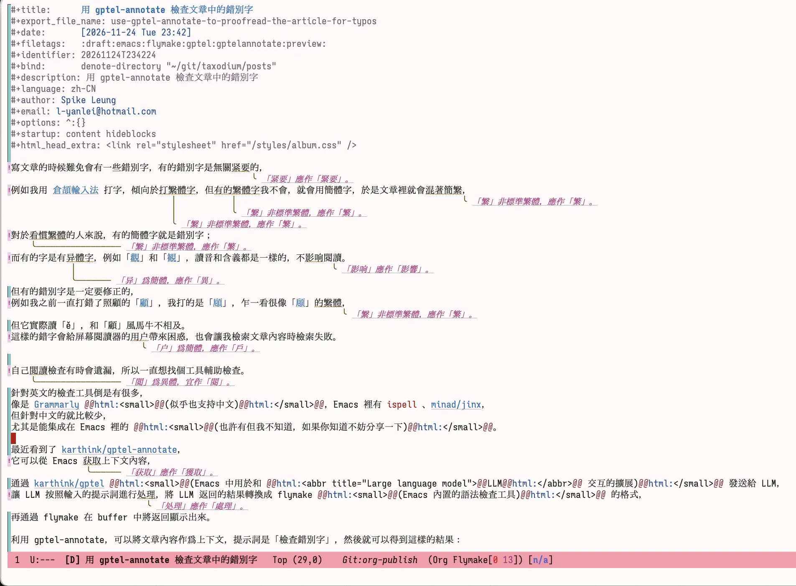
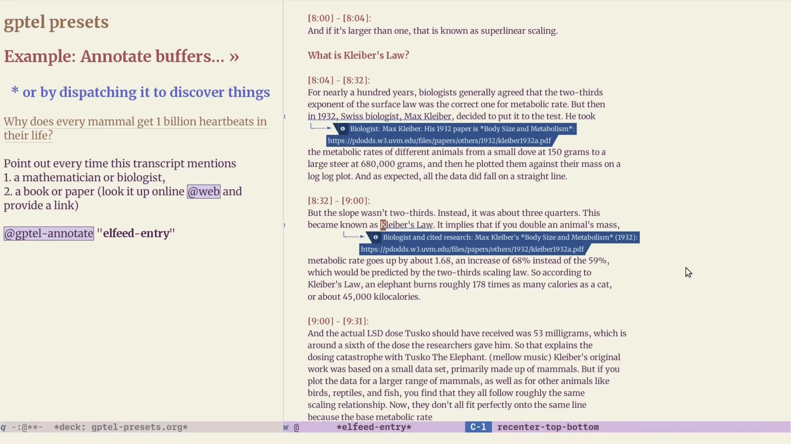

用 gptel-annotate 檢查文章中的錯別字
寫文章的時候難免會有一些錯別字，有的錯別字是無關緊要的，例如我用 倉頡輸入法 打字，傾向於打繁體字，但有的繁體字我不會，就會用簡體字，這就會導致簡繁混雜；有的字有異體字，例如「觀」和「観」，讀音和含義都是一樣的，我有時也會用混。這兩種情況大體上並不影響閱讀，頂多是看著有些許奇怪。
但有的錯別字是一定要修正的，例如我之前一直打錯了照顧的「顧」，我打的是「頋」，乍一看很像「顾」的繁體，但它實際讀「ě」，和「顧」風馬牛不相及 (好吧，好像是個俗字，但讀音相去太遠了)；更離譜的是，在 學習網頁內容無障礙 裡，我把 Web Content Accessibility Guidelines 的縮寫寫成了 WACG 一直沒發現。這樣的錯字會給屏幕閱讀器的用戶帶來困惑，也會讓我檢索文章內容時檢索失敗。
自己閱讀檢查有時會遺漏，所以一直想找個工具輔助檢查。針對英文的檢查工具倒是有很多，像是 Grammarly (似乎也支持中文)，Emacs 裡有 ispell 、minad/jinx，但針對中文的就比較少，尤其是能集成在 Emacs 裡的 (也許有但我不知道，如果你知道不妨分享一下)。
Kagi Translate 的 Proofread 倒也可以檢查多種語言，但也不是集成在 Emacs 裡的，平時寫英文回復時我會用來檢查一下拼寫和語法。
最近看到了 karthink/gptel-annotate，它可以從 Emacs 獲取上下文內容，通過 karthink/gptel (Emacs 中用於和 LLM 交互的擴展) 發送給 LLM，讓 LLM 按照輸入的 prompt 進行處理，將 LLM 返回的結果轉換成 flymake (Emacs 內置的語法檢查工具) 的格式，再通過 flymake 在 buffer 中將返回顯示出來。
利用 gptel-annotate，可以將文章內容作為上下文，提示詞是「檢查錯別字」，然後就可以得到這樣的結果：


怎麼樣，效果不錯吧？至少我挺滿意的 (如果你心動了，想用 Emacs，請看 如何上手 Emacs)。
將指針移動到錯別字上，還可以用 gptel-annotate-accept 來應用修改，這樣檢查和修正錯別字就方便多了。
除了檢查錯別字，gptel-annotate 還可以做很多事，作者給了 幾個用例，例如查找文章中出現的書或論文，聯網搜索它們的連結，然後顯示在文章中。


gptel-annotate 相當於是讓 LLM 作為 LSP (Language Server Protocol)，給 LLM 一個 prompt，將 LLM 的結果作為提示顯示在對應的文本下。 LSP 是針對特定編程語言的，有一套固定的規則，而 gptel-annotate 利用 LLM，可以处理各種語言，規則是通過 prompt 指定的； LSP 一般響應很快，而 gptel-annotate 要調用雲端 LLM 处理，就相對慢得多 (不知道用本地模型如何)。
如果你想在 Emacs 中使用 gptel-annotate，這是相關的配置：
(use-package flymake
:config
;; 下面這個配置要 Emacs 版本大於 30.1 才支持
;; Emacs 32 前的版本請用 `flymake-show-diagnostics-at-end-of-line'
;; 讓 flymake 的提示直接顯示出來，有多種樣式
(setq flymake-inline-diagnostics 'fancy))
(use-package gptel
:config
;; 你可以用自己喜歡的模型，配置見： https://github.com/karthink/gptel
(setq gptel-model 'deepseek-flash
gptel-backend (gptel-make-deepseek "DeepSeek"
:host "api.deepseek.com"
:endpoint "/chat/completions"
:stream t
;; 這是我從 authinfo 获取 API Key 的方法，要換成你自己的 API Key
;; 關於 authinfo: https://taxodium.ink/config-authinfo-with-emacs.html
:key (spike-leung/get-deepseek-api-key)
:models '(deepseek-flash deepseek-v4-pro))))
(use-package gptel-annotate
:straight (:host github :repo "karthink/gptel-annotate")
:after gptel
;; Emacs 版本大於 30 要加上這個配置，否則 flymake 拒絕 gptel-annotate-flymake
;; 或者你也可以配置 `trusted-content'
:config
(put 'gptel-annotate-flymake 'flymake-always-safe t))